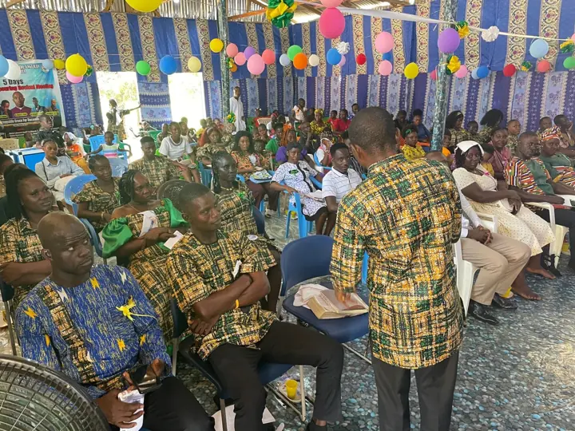

Every Monday
Equipping The Saints School
Our School of Discipleship, Leadership and Ministry trains believers to follow Jesus faithfully and to lead others to do the same.
- Weekly classes, Mondays at 4:00 PM
- Structured training manuals
- Mentoring from experienced ministers
- A pathway into leadership and ministry